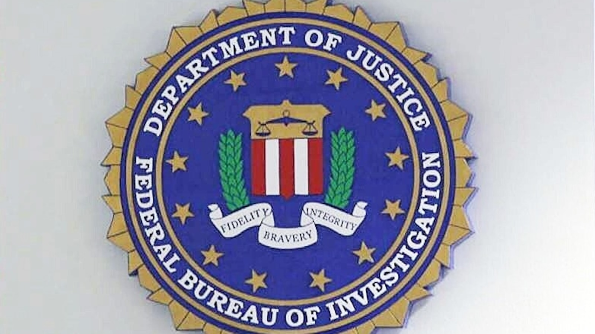

5 ноября прокурор США по южному округу Нью-Йорка Джейми Макдональд объявил о разоблачении схемы, в которой искусственный интеллект сыграл главную роль. Обвинения предъявлены Джейкобу Соалю (41 год, испанская Марбелья, известно под прозвищем «Рокки Бальбоа»), Шарону Хазану (54 года, Израиль) и Гаю Штриту (42 года, Израиль и ОАЭ). Все трое арестованы в Европе — Соаль в Испании в июне, Хазан там же в августе, Штрит в Великобритании в сентябре — и ждут экстрадиции в США. По каждому эпизоду им грозит до 20 лет федеральной тюрьмы.
По данным разпечатанного indictment, с июля 2024 года по февраль 2026-го группа атаковала тысячи компаний по всему миру. Сценарий всегда строился вокруг доверия: сотруднику звонил «гендиректор» и просил помочь с конфиденциальной финансовой операцией — голос и картинка в видеозвонке были сгенерированы нейросетью. Затем «начальник» переправлял жертву к «адвокату» из известной международной юрфирмы, которого тоже играли злоумышленники с тем же ИИ. Дальше — перевод крупной суммы на подконтрольный счет. Комбинация двух подставных авторитетных фигур «CEO + юрист» и создавала видимость легитимности сделки.
Общий ущерб — более $129 млн. В обвинительном заключении названы, среди прочих: больничная сеть из Миссури (потеряла $4 829 580), банк из Род-Айленда ($2 684 580), больничная сеть из Калифорнии ($2 968 497), британская финтех-компания ($11 578 474), фонд взаимных инвестиций из Массачусетса ($4 639 918) и производитель кормов для животных из Флориды ($5 242 747). Хазан, к слову, не новичок: в 2008 году он уже был осужден в федеральном суде Манхэттена за сговор с целью банковского мошенничества.
Макдональд в заявлении отметил: ИИ «обладает огромным потенциалом, но общество должно осознавать, что найдутся те, кто использует эту технологию в преступных целях». Это один из первых случаев, когда ИИ-клонирование голоса и лица стало не деталью дела, а центральной статьи обвинения на федеральном уровне. Практический вывод для компаний звучит скучно, но именно он спасает деньги: подтверждение платежей с нетипичными реквизитами по заранее известному отдельному каналу, «стоп-слово» для срочных просьб от руководства, лимиты и обязательная пауза на перепроверку при крупных переводах. Ни один реалистичный голос в трубке не должен быть единственным основанием перевести миллионы.